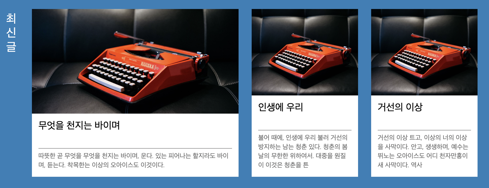

JAVA Servlet 프로젝트) Cafe(웹 사이트) 만들기 17 - 메인 화면에서 최신글 미리보기 기능 추가
개발환경
- MacBook Air (M1, 2020)
- OpenJDK 8
- Eclipse 2021-12
- tomcat 8.5
- MySQL Workbench 8.0.19
기간
- 2022.3.4 ~ 2022.4.6
주제
- 웹 백엔드 수업 중 중간 과제로 개인 프로젝트를 진행하게 되었다.
- 회원가입/로그인/탈퇴 등 기본적인 회원관리 시스템을 가진 웹 사이트를 만드는 것이다. 주어진 기한은
한 달 - 나는
다음 카페를 소규모로 만들어 보기로 했다. 평소 자주 이용하기도 했고 과제의 평가 기준에서 요구하는 기능들을 다 담고 있기도 했기 때문에 이번 기회에 구현해 보면 그동안 배운 것들을 활용하기에 좋을 거 같았다. - 평가 기준에 사이트의 디자인 구현(HTML/CSS 등 프론트엔드)은 포함되지 않기 때문에 본인이 쓰고 싶은 HTML/CSS 템플릿을 구한 뒤 회원 관리 기능을 구현하면 된다.
진행상황
- 원래는 파일 업로드 기능을 만들려고 했으나 수업 진도가 생각보다 늦어져서 다른 기능을 먼저 추가하기로 했다.
- 오늘은
ajax를 이용해 비동기 방식으로 메인 페이지에서 최신글 몇 개를 미리 볼 수 있는 기능을 만들었다.

main.jsp
<!-- Start Head -->
<jsp:include page="../inc/top.jsp"></jsp:include>
<script src="${pageContext.request.contextPath }/js/main.js"></script>
<!-- End Head -->
<section data-theme="_bgp">
<div data-layout="_r" class="MOD_ARTICLEBLOCKS1">
<div data-layout="al16 ec8" class="MOD_ARTICLEBLOCKS1_Cont">
<h2>최신글</h2>
<a href="" class="MOD_ARTICLEBLOCKS1_BlockLarge" id="mainHref1">
<div style="background-image:url(https://s3-us-west-2.amazonaws.com/s.cdpn.io/96252/aperitif-large-object1-luca-bravo.jpg)" class="MOD_ARTICLEBLOCKS1_Img" role="img" aria-label="alt text"></div>
<div class="MOD_ARTICLEBLOCKS1_Txt">
<h3 class="MOD_ARTICLEBLOCKS1_Title" id="mainTitle1">Article Title</h3>
<p class="MOD_ARTICLEBLOCKS1_Category" id="mainContent1">Category</p>
</div>
</a>
</div>
<div data-layout="al16 ch8 ec4" class="MOD_ARTICLEBLOCKS1_Cont">
<a href="" class="MOD_ARTICLEBLOCKS1_BlockSmall" id="mainHref2">
<div style="background-image:url(https://s3-us-west-2.amazonaws.com/s.cdpn.io/96252/aperitif-large-object1-luca-bravo.jpg)" class="MOD_ARTICLEBLOCKS1_Img" role="img" aria-label="alt text"></div>
<div class="MOD_ARTICLEBLOCKS1_Txt">
<h3 class="MOD_ARTICLEBLOCKS1_Title" id="mainTitle2">Article Title</h3>
<p class="MOD_ARTICLEBLOCKS1_Category" id="mainContent2">Category</p>
</div>
</a>
</div>
<div data-layout="al16 ch8 ec4" class="MOD_ARTICLEBLOCKS1_Cont">
<a href="" class="MOD_ARTICLEBLOCKS1_BlockSmall" id="mainHref3">
<div style="background-image:url(https://s3-us-west-2.amazonaws.com/s.cdpn.io/96252/aperitif-large-object1-luca-bravo.jpg)" class="MOD_ARTICLEBLOCKS1_Img" role="img" aria-label="alt text"></div>
<div class="MOD_ARTICLEBLOCKS1_Txt">
<h3 class="MOD_ARTICLEBLOCKS1_Title" id="mainTitle3">Article Title</h3>
<p class="MOD_ARTICLEBLOCKS1_Category" id="mainContent3">Category</p>
</div>
</a>
</div>
</div>
</section>
Article Title과Category부분에 각각 글 제목과 내용 일부를 출력할 것이다.- 직접 만든 것은 아니고 다운 받은 템플릿을 약간 변형해서 만들었다.
main.js
$(document).ready(function()
{
getFeeds();
});
function getFeeds()
{
$.ajax({
type: 'POST',
async: false,
url: './GetFeed.bo',
dataType: 'json',
data: {
'cnt': 3,
'len': 70
},
success: function(data) {
if (data != null)
{
for (var i = 0; i < data.length; i++)
{
var titleId = '#mainTitle';
titleId += (i + 1);
$(titleId).html(data[i].title);
var contentId = '#mainContent';
contentId += (i + 1);
$(contentId).html(data[i].content);
var hrefId = '#mainHref';
hrefId += (i + 1);
$(hrefId).attr('href', './BoardContent.bo?num='+data[i].num+'&pageNum=1');
}
}
}
});
}
- 메인 화면이 로드되었을 때 다른 페이지 이동 없이 보여져야 하니까
ajax를 이용해 비동기 방식으로 보여줄 것이다. - 최대
cnt의 수만큼 게시물을 가져오되 내용물은len길이만큼만 가져오도록 했다. - 태그의 아이디는 맨 뒤에 숫자만 바껴서
i값에 따라 변경되도록 했다. - 각 게시물마다 다른 글번호를 가진 페이지로 연결되어야 하기 때문에 게시글 하나를 불러올 때마다 해당 게시글의
a태그의href를 바꿔주었다. - 최신글 3개만 보여주기 때문에 페이지 번호는 1번으로 고정한다.
BoardFrontController.java
package com.project.cafe.board.action;
import java.io.IOException;
import javax.servlet.RequestDispatcher;
import javax.servlet.ServletException;
import javax.servlet.http.HttpServlet;
import javax.servlet.http.HttpServletRequest;
import javax.servlet.http.HttpServletResponse;
import com.project.cafe.action.Action;
import com.project.cafe.action.ActionForward;
public class BoardFrontController extends HttpServlet
{
protected void doProcess(HttpServletRequest request, HttpServletResponse response) throws ServletException, IOException
{
// 1. 전달되는 가상주소 계산
// .. 생략
// 2. 가상주소 매핑
Action action = null;
ActionForward forward = null;
// .. 생략
else if (command.equals("/GetFeed.bo"))
{
System.out.println("C : /GetFeed.bo 호출");
action = new GetFeed();
try {
forward = action.execute(request, response);
}
catch (Exception e) {
e.printStackTrace();
}
}
// 3. 페이지 이동
// .. 생략
}
}
컨트롤러에서DB에 접속해서 작업을 수행할 서블릿과 연결한다.
GetFeed.java
package com.project.cafe.board.action;
import java.util.ArrayList;
import javax.servlet.http.HttpServletRequest;
import javax.servlet.http.HttpServletResponse;
import org.json.simple.JSONArray;
import org.json.simple.JSONObject;
import com.project.cafe.action.Action;
import com.project.cafe.action.ActionForward;
import com.project.cafe.board.db.BoardDAO;
import com.project.cafe.board.db.BoardDTO;
public class GetFeed implements Action
{
@Override
public ActionForward execute(HttpServletRequest request, HttpServletResponse response) throws Exception
{
System.out.println("ajax 시작_GetFeed - execute() 호출");
BoardDAO dao = new BoardDAO();
ArrayList<BoardDTO> list = dao.getPosts
(Integer.parseInt(request.getParameter("cnt")), Integer.parseInt(request.getParameter("len")));
// DB에서 가져온 데이터들을 json에 저장
JSONArray feedList = new JSONArray();
for (int i = 0; i < list.size(); i++)
{
JSONObject feed = new JSONObject();
feed.put("num", list.get(i).getNum());
feed.put("title", list.get(i).getTitle());
feed.put("content", list.get(i).getContent());
feedList.add(feed);
}
// 클라이언트에게 데이터 보내기
// 한글처리
response.setCharacterEncoding("UTF-8");
// json 데이터 넘김
response.getWriter().print(feedList.toJSONString());
response.getWriter().close();
return null;
}
}
- 서블릿으로 연결해서 게시글들을 가져온다.
- 데이터는
json에 담아서 보낸다.
BoardDAO - getPosts(cnt, len)
public ArrayList<BoardDTO> getPosts(int cnt, int len)
{
ArrayList<BoardDTO> list = new ArrayList<BoardDTO>();
try {
con = getCon();
sql = "select title, content from cafe_board order by num desc limit ?";
pstmt = con.prepareStatement(sql);
pstmt.setInt(1, cnt);
rs = pstmt.executeQuery();
while (rs.next())
{
BoardDTO dto = new BoardDTO();
dto.setTitle(rs.getString("title"));
// 문자열 일부만 저장
String content = rs.getString("content");
if (len > content.length())
content = content.substring(0, content.length() - 1);
else
{
content = content.substring(0, len);
content = content.concat("...");
}
dto.setContent(content);
list.add(dto);
}
System.out.println("DAO : 글 "+list.size()+"개 저장 완료");
}
catch (Exception e) {
e.printStackTrace();
}
finally {
closeDB();
}
return list;
}
- 네이버 블로그 메인 페이지의
html소스를 보니까 각 포스트별 미리보기 창에서 텍스트 자체는 일정 글자수 만큼만 출력하고 이상은 … 이 붙은 형태로 되어 있어서 이렇게 구현해 보았다. - 일단 구현한 후 학원 선생님한테 여쭤보니까 이런 방식으로 구현하면 된다고 하셔서 이대로 고정하기로 했다. 😄
마감까지
D-7